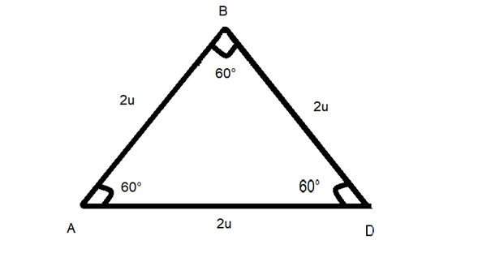
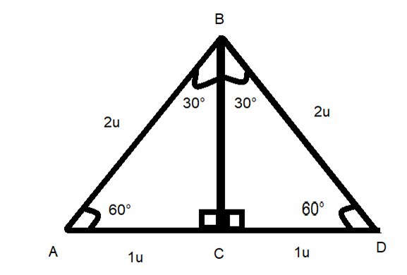
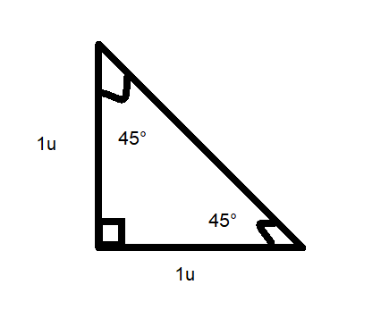

Aprendizaje:
Determina los valores de las razones trigonométricas para los ángulos de 30°, 45° y 60° y emplea la calculadora para verificarlos.
Resuelve problemas que involucren triángulos rectángulos.
Solución de triángulos rectángulos especiales
Bienvenido a la lección, utilizaremos las razones trigonométricas, estudiadas en la lección anterior (lección 1) como base para construir este nuevo aprendizaje.
Empecemos determinando las razones trigonométricas de los ángulos de 30° y 60°; para esto vamos a utilizar un triángulo equilátero ABD de 2 unidades por lado, al ser un triángulo equilátero y la suma de los ángulos interiores de todo triángulo es 180°, necesariamente los ángulos interiores del triángulo equilátero son de 60°.

Figura 7, Imagen propia.
Trazamos la altura de este triángulo; para esto debes de recordar las propiedades de los triángulos equiláteros o Isósceles, respecto a trazar la recta altura para ello realiza la siguiente actividad.
Triángulo equilátero

Figura 8, Imagen propia.
Ahora puedes observar que los triángulos que se formaron son triángulos rectángulos que tiene ángulos de 60°, 30° y 90°.
Con las preguntas que contestaste sabes que la hipotenusa mide 2 unidades, uno de los catetos 1 unidad y falta que encuentres la medida del otro cateto. Aplica Teorema de Pitágoras.
$$1^2 + x^2= 2^2$$
$$x^2= 2^2-1^2$$
$$x^2= 3$$
$$x=\pm \sqrt{3}$$
Recuerda que solo tomamos el valor positivo $x = \sqrt{3}$, ya que no hay longitudes negativas.
Ya con todos los datos obten las razones trigonométricas tanto para los ángulos de 30° y 60°.
Para el ángulo de 60° puedes observar que el cateto opuesto es $\sqrt{3}$ , el cateto adyacente es 1 y la hipotenusa 2.
Para el ángulo de 30° el cateto opuesto es 1, el ángulo adyacente $\sqrt{3}$ , y la hipotenusa 2.
para el ángulo de 45°
Tenemos el siguiente triángulo rectángulo con ambos catetos de 1 unidad.

Figura 9, Imagen propia.
Como puedes ver el triángulo rectángulo tiene dos ángulos de 45° y un ángulo de 90° (recuerda que la suma de los ángulos interiores de todo triángulo es 180°), por lo tanto $\alpha$ y $\beta$ miden 45°.
Hipotenusa
Realiza la siguiente actividad.